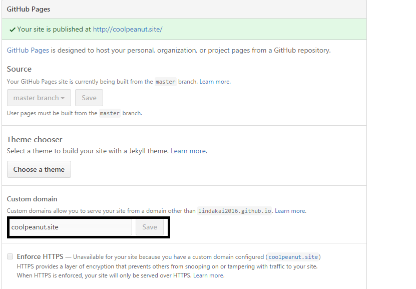

登录github，选择Create a new repository创建一个新的项目，项目名称必须是username.github.io，用这个项目名则项目默认开启Github Pages功能。如果用其他项目名，则 必须在项目设置中开启Github Pages，并且博客的访问地址会类似于username.github.io/project，无法为该url绑定独立域名。
创建项目后，在本地路径 E:/github/ 下使用git操作将项目克隆到本地，如果没有安装git先安装git再做之后的操作，windows下运行cmd：
E: cd github git clone https://github.com/lindakai2016/lindakai2016.github.io.git
执行完成后会生成lindakai2016.github.io文件夹，重命名为blog，在blog下新建index.html，内容如下：
<html>
<head>
<meta charset="utf-8">
</head>
<body>
My Blog
</body>
</html>
再用cmd执行如下git命令，上传index.html：
git init git remote add origin https://github.com/lindakai2016/lindakai2016.github.io.git git add . git commit -m "注释内容" git push origin master
上传成功后，正常情况下用浏览器访问lindakai2016.github.io就会出现index.html的内容。
如果要绑定独立的域名，而不是使用默认的username.github.io，先从域名商那里注册一个域名，并添加如下3个DNS记录:
A @ 192.30.252.153 A @ 192.30.252.154 CNAME www lindakai2016.github.io
设置之后需要等待DNS服务器更新，更新完后，如果直接访问域名会出现无法访问，我们还需要在项目中添加一个cname文件，在文件中添加域名，然后提交，或者更快速的方式是 在项目设置中，找到Github Pages，在Custom domain中输入域名，点击保存，github会自动生成cname文件。
